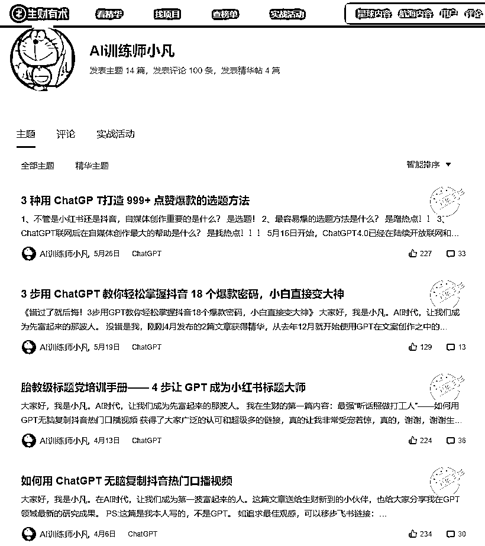
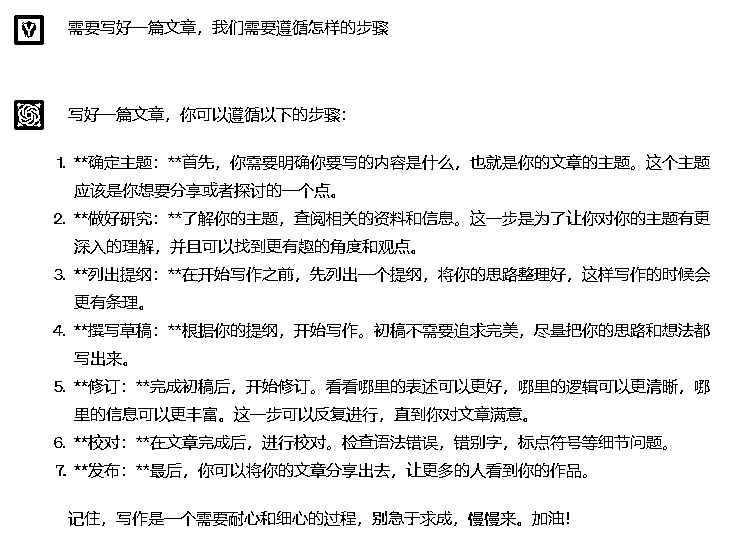
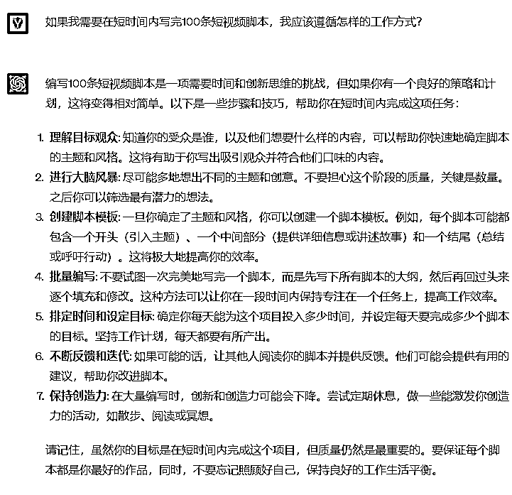

来源：https://fjt9w880tn.feishu.cn/docx/OHjXd8Am6ocYBoxw5AfcBWxen5g
大家好，我是小凡，已经很久没有在生财露面了，不知道大家还记不记得我。牛逼就不吹了，对我不了解的小伙伴，可以看看我以前的几篇精华帖。

本次航海已经进程过半，不知道大家对ChatGPT+自媒体的理解和认知是否有所提升？是否躬身而行，得到正反馈了呢？这次分享，小凡并不决定讲太多实际的GPT技巧，不会占用太大的篇幅，但是想要给大家做一些比较进阶的思考，并且板正一些关键认知。
温馨提醒：尽管不讲技巧，但是这次的分享建立在有足够的GPT认知和使用技巧之上，如果你暂时还是刚入门的小白，建议看完本次分享，抓紧先去补充基础性的GPT使用技巧。
我们常常会吐槽做产品的人容易陷在产品里面，形成“产品思维”。什么是“产品思维”？就是一个劲地关注产品的功能有多牛逼，在什么地方又做了什么升级，或者产品又有什么技术上的全新突破。殊不知，产品是服务于用户的，如果你没有站在用户的视角，去寻找并解决用户的问题，那么你的产品再怎么强，再怎么牛，都没用。
因为没人买单！
小凡为什么要先提“产品思维”呢？因为产品思维也好，我接下来要讲的所谓“GPT逻辑”也好。这在本质上实际是同一个认知偏差，也就是你只关注主观的自己，却没有去考虑客观与你交互的事物。
大家可以停下来思考一下，这样的认知偏差，是不是也普遍存在于我们的生活之中？
应届毕业生在找工作面试的时候，你是不是更想完美地展示自己，恨不得把自己所有的闪光点都说了，却几乎没有怎么考虑过站在老板的角度考虑他需要你进公司做些什么？
男孩子在追求女生的时候，恨不得把自己的时间全都扑进去，自己有多少钱就想花掉多少钱去送她贵重的礼物，却从来没有想过女生追求的所谓“恋爱”的感觉到底是什么？
……
这里就不再展开了，做完前面这个思考，那么大家想想自己航海到现在，是从GPT逻辑出发来学习，还是从业务逻辑出发来学习的呢？如果天天想着GPT能有什么高级的技巧，想要研究明白各种各样的插件能干啥，然后十分关注于GPT的发展，还有注重文心一言、克劳德等等的对比，那么你就陷入到GPT逻辑之中了。
这会造成一个什么后果呢？你可能最终对大语言模型如数家珍，也很会用GPT了，但是你发现你找不到GPT的用武之地，你没法变现。你会很迷茫，并且在那里拼命寻找：我到底能用GPT来干什么呢？我相信这样的迷茫，会占人群里的大多数。GPT在你手中，成了仅能提供“自嗨”价值的美丽废物。
那什么是业务逻辑呢？就是你很清楚地知道，假设你作为一名公众号作者，你知道你面向的是怎么样的人群，你擅长写怎样的内容，也十分了解这些内容又是怎么触动这个人群的内心的。你懂那些认可你价值的人，为什么来认可你，这就是业务逻辑，也可以称之为“用户思维”。
在业务逻辑顺畅的基础上，我们才会有所谓的“产品迭代”，才会有“降本增效”，才会有引入GPT的土壤。业务的闭环，才是正反馈的基础。说句难听的，只是会用GPT，你什么都不是；但知道哪里能用上GPT，才是真正的行家。大家一定要带着自己的业务目的去学习GPT，而不是为了使用上GPT而去拼命找业务。所以呀，上了这条船，入门容易，但是现在真正渐入佳境，没有这样的一个思维转变，大家是一定会陷入迷茫之中的。
那么，业务逻辑到底该如何拆解呢？如何根据业务逻辑制定SOP呢？如何让GPT优化我们的业务？我们举点例子。
思考这样一个问题：如果没有GPT，你是怎么写一篇文章的呢？利用我们自身具备的知识体系，思考清楚，写一篇文章的步骤是如何。
不过我相信大部分人写一篇文章大概率都是到手就开写，毫无章法。所以这就是上一部分讲到的问题所在，我们并不是不懂GPT逻辑，而是不懂业务逻辑。公众号“爆文”不爆，真的仅仅是因为你GPT用得不够溜吗？换句话说，决定你文章火热程度的，难道就是使用GPT的水平高低吗？不是的，这个项目的核心并不在于GPT。
话扯远了，那有人问，那我们真不懂咋办？万幸，我们恰好有GPT，我们可以向其适当地请教请教。不过需要注意的是，在GPT的语料库中，大多是通用性的知识，写好公众号爆文的核心业务逻辑，或是许许多多的副业项目的核心业务逻辑，GPT是不会知道的。在这里我们仅仅是做一个示范，但大家在自己实际去跑的过程中，一定要更加专业垂直并且贴合自己，我们现阶段的核心目标仍然是拆解，拆解好了，GPT就能活了。

在结合GPT的指点以及我们自身的认知，我们可以把这件事的基本SOP的流程落地：
拥有这样步骤清晰的SOP，那我们如何引入GPT就十分清楚了。如果要选题，那就做一个选题GPT，对于其他步骤，也是如此。这些GPT最好是独立开来的，每个GPT针对性地完成其相应的目的。
其实这个路数，我们还可以继续深挖下去，那么如果想要选出一个好题，它的逻辑是什么？我们又该如何做呢？这里是不是又可以继续拆解呢？
回看这个过程，大家觉得，这是在提升GPT使用技巧，还是在切切实实提升我们如何写好一篇文章的能力呢？所以，一切都是，业务在前，GPT在后的。你的思路高效，GPT就会如虎添翼；你的思路低效，模糊不清，那你的GPT的回复自然也是乱七八糟，不堪大用。
视频脚本也有同样的思路，可以自己想、也可以问GPT，或者投喂相应SOP资料让其帮助解决。既然都用上GPT了，那我们肯定搞点指数级提效的事情，刚才写1篇公众号文章，是精细化地运作，那么我想要批量化地弄100个脚本出来呢？跟上面一样，先请教一下GPT再说。

可以看到，GPT提供的思路是不太一样。并且按照我们的常识理解，批量化生成，自然不是1件事情重复100次，而是1件事情分环节地批量重复，最后组合在一起。就跟造车的流水线是一样的，把每个部分都先批量化造好，再来组装；而不是1234567按顺序造好部分组装好一辆车之后，再去造另一辆车。
那么这套SOP流程，结合基本认知，我认为可以确定如下：
怎么用GPT接入，在这里我就不额外重复了
OK，就是如此。说了这么多，也举了2个案例，在最后，小凡反而希望大家全部忘记，不仅仅是忘记案例，更要忘记GPT，这就是小凡今天想要分享的唯一核心：理解你的业务远比理解GPT重要得多。
加入生财的小伙伴，不论是个人还是老板，大家都是奔着“谈钱不伤感情”而来。
GPT的技巧说实话是有限的，但是业务的发展是无限的，在GPT航海进行一阵了解使用技巧之后，我希望大家能够多去把重心转到自己的项目上来，不断地逼迫自己去思考自己的项目如何拆解，如何用GPT接入，再到最后，才去研究GPT怎么用起来好使。
最后再附送一些小建议：
AI训练师小凡
前人工智能领域风险投资人
生财有术ChatGPT航海教练
亿级亚马逊企业组织架构优化师
专注利用AI解决企业级提效
矩阵化批量化运作整体解决方案
公号：黄小凡2077；VX：evanhhh6666（备注来意不然不通过）
往期生财精华：